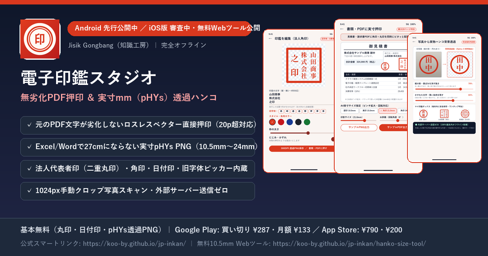

電子印鑑スタジオ - 透過ハンコ作成＆PDF押印
전자도장 스튜디오 - 투명 도장 제작 & PDF 날인 (電子印鑑スタジオ)
サブタイトル：代表者印・角印・日付印も完全オフラインで即出力（Android 先行公開中 ／ iOS版 審査中）
부제목: 대표자인·법인 각인·날짜 도장도 완전 오프라인 즉시 출력 (Android 선행 공개 중 / iOS 심사 중)
1. 元のPDFのテキスト選択・画質を一切劣化させない「ロスレスベクターPDF直接押印」と、Excel/Wordで27cmにならず実寸で貼れるPNG pHYs物理サイズ（10.5mm〜24mm）自動記録を実現。
2. 「髙・﨑・邊・齋」などの旧字体ピッカー＆4種オフライン書体で個人丸印・日付データ印・法人代表者印（二重丸印）・法人角印を作成でき、さらに手動クロップ枠・微調整回転付きの1024px実物ハンコ透過スキャンにも対応。
3. 会員登録不要・100%端末内（完全オフライン）処理のため、社外秘の見積書・請求書・契約書PDFも外部サーバーへ一切送信されず安全に完結。
1. 원본 PDF의 텍스트·화질을 100% 보존하는 '무손실 벡터 PDF 직접 날인'과, Excel/Word 붙여넣기 시 27cm로 커지지 않는 PNG pHYs 물리 mm 메타데이터 자동 기록을 실현.
2. 구자체 피커(髙·﨑·邊·齋) & 오프라인 4종 서체로 개인 원형인·날짜인·법인 대표자인(이중 원형인)·법인 각인을 제작하고, 수동 크롭 & 미세 회전 1024px 실물 도장 투명 스캔까지 통합.
3. 회원가입 불필요·100% 기기 내(완전 오프라인) 처리로 대외비 견적서·청구서 PDF가 외부 서버로 전송되지 않아 보안 걱정 없이 완결.


従来の電子印鑑アプリの課題を解決する「4つの武器」
기존 전자도장 앱의 한계를 해결한 「4대 핵심 무기」
『電子印鑑スタジオ』は、「Excelに貼ると27cmの巨大サイズになる」「PDFに押すと文字が画像化されて検索できない」「法人代表者印の二重丸印が作れない」「複数ハンコが並んだ写真から1つだけ切り抜けない」といった現場の実務課題を解消するために開発されました。
『전자도장 스튜디오』는 'Excel 27cm 거대화', 'PDF 날인 시 원본 글자 이미지화/깨짐', '법인 대표자인(이중 원형인) 부재', '종이 도장 수동 크롭 부재'라는 기존 앱들의 실무 병목을 정면 해결한 최신 아키텍처입니다.
1. 無劣化ベクターPDF直接押印（20p超対応）
1. 원본 무손실 벡터 PDF 직접 날인
PDFを低解像度画像に焼き直さず、元のベクター文字選択・レイアウト・全ページをそのまま保持した状態で透明印影のみを正確に重ねて出力します。
PDF를 비트맵으로 다시 굽지 않고 원본 벡터 텍스트·복사·검색 및 20페이지 초과 대용량 계약서 규격을 100% 보존한 채 날인합니다.
2. PNG pHYs Excel・Word実寸mm対応
2. PNG pHYs 물리 mm 메타데이터 주입
出力される1024×1024px透過PNGには物理サイズ情報（pHYs DPI）を自動記録。ExcelやWordに貼り付けるだけで10.5mm・18mm・21mmの実寸サイズで配置されます。
내보내는 1024px 투명 PNG에 물리 DPI(pHYs)를 자동 기록해 Excel·Word에 붙여넣기만 해도 27cm 거대화 없이 10.5mm/18mm/21mm 실물로 삽입됩니다.
3. 法人代表者印（二重丸印）・角印・旧字体
3. 법인 대표자인(이중원형)·각인·구자체
外周会社名＋中央役職名の「法人代表者印（二重丸印）」、法人角印（1〜4列）、日付データ印（令和/西暦）に加え、「髙・﨑・邊・齋」旧字体ピッカー＆4種オフライン書体を標準内蔵。
외곽 상호+중앙 직책 이중 원형 대표자인과 사각인(1~4열), 날짜인, 구자체 피커(髙·﨑·邊·齋) 및 SIL OFL 1.1 서체 4종을 오프라인 내장했습니다.
4. 手動クロップ＆1024px背景透過スキャン
4. 수동 크롭 & 1024px 고해상도 스캔
複数のハンコが押された書類写真でも、手動クロップ枠・90°回転・±15°傾き補正で狙った印影だけを切り出し、紙の影を消して1024px透過PNGを生成。外部通信はゼロです。
다중 도장 사진에서도 수동 크롭·회전 보정으로 원하는 도장만 분리해 1024px 투명 PNG로 추출하며 외부 서버 전송은 0바이트입니다.
アプリ基本情報・スペック一覧（記事掲載用データ）
앱 기본 사양 및 스펙 일람 (기사 등재용 데이터)
| アプリ名称 | 앱 명칭 | 電子印鑑スタジオ - 透過ハンコ作成＆PDF押印 電子印鑑スタジオ - 透過ハンコ作成＆PDF押印 (전자도장 스튜디오 - 투명 도장 제작 & PDF 날인) |
|---|---|---|
| 公開ステータス | 스토어 공개 상태 | Android（Google Play）：先行公開中（v1.0.0） ／ iOS・iPadOS（App Store）：審査中（公開準備中） Android(Google Play): 선행 공개 중(v1.0.0) / iOS·iPadOS(App Store): Build 9 심사 대기 중 |
| 対応OS・機種 | 지원 OS 및 기기 | Android 7.0以降（先行公開中）、iOS 15.0以降／iPadOS 15.0以降（審査中） Android 7.0 이상(선행 공개 중), iOS 15.0+ / iPadOS 15.0+(심사 대기 중) |
| 価格（税込） | 가격 (세금 포함) |
・基本無料（個人丸印・小判印・日付データ印の鮮明モード作成、pHYs実寸入り背景透過PNG保存、内蔵サンプル書類3種への押印出力、マイ印鑑2個保存） ・Pro買い切りプラン：¥790（永久利用）／ Pro月額プラン：¥200/月（初回3日間無料トライアル付き） ※Pro解放機能：法人代表者印（二重丸印）・法人角印、朱肉かすれ・二重枠保存、外部PDFロスレス押印（複数ページ・20ページ超無制限）・1書類への複数同時押印、手動クロップ1024px写真スキャン透過保存、マイ印鑑無制限保存 · 기본 무료 (개인 원형인·타원형 회람인·날짜 데이터인 선명 모드, pHYs 실측 투명 PNG, 내장 샘플 3종 날인, 내 도장 2개 보관) · Pro 평생 소장 플랜: ¥790 / Pro 월간 구독: ¥200/월 (최초 3일 무료 체험 포함) ※Pro 해금 기능: 법인 대표자인(이중원형)·법인 각인, 인주 번짐·이중 테두리, 외부 무손실 PDF·다중 날인, 수동 크롭 1024px 사진 스캔, 무제한 보관함 |
| 公式リンク・Webツール | 공식 링크 & 무료 웹 도구 |
・公式スマートリンク（自動案内）：https://koo-by.github.io/jp-inkan/ ・Google Play（Android 先行公開中）：https://play.google.com/store/apps/details?id=com.knowledgestudio.japan.app_01_denshi_inkan&hl=ja&gl=JP ・App Store（iOS / iPadOS）：審査中（公開完了次第 /jp-inkan/ にてご案内） ・無料Webツール（10.5mm透過PNG作成）：https://koo-by.github.io/jp-inkan/hanko-size-tool/ |
| 開発・運営事業者 | 개발 및 운영사업자 | Jisik Gongbang（知識工房 ／ 代表：KOO BONYEOP ／ D-U-N-S® Number：697010594） Jisik Gongbang (지식공방 / 대표: 구본엽 / D-U-N-S® Number: 697010594) |
プレスリリース全文（記事引用・転載フリー）
보도자료 전문 (일본 미디어 기사 인용·전재 프리)
メディア関係者様・ブロガー様は、以下のプレスリリース本文および当ページ内の情報を自由に引用・転載いただけます。
일본 미디어 기자 및 블로거가 별도 문의 없이 즉시 기사에 인용·복사하여 사용할 수 있는 최신 일본어 보도자료 전문입니다.
【プレスリリース】元のPDFが劣化しないロスレス押印＆Excel実寸mm透過PNGに対応！完全オフラインの『電子印鑑スタジオ』Android版を先行公開（iOS版は審査中） Jisik Gongbang（知識工房、代表：具 本燁）は、会員登録不要・完全端末内（オフライン）処理で電子印鑑の作成からPDF書類への無劣化押印までを完結できるビジネスアプリ『電子印鑑スタジオ - 透過ハンコ作成＆PDF押印』をGoogle Play（Android版）にて先行公開いたしました（iOS / iPadOS版は審査中）。併せて、PC・iPhoneのブラウザ上ですぐに試せる無料「実寸10.5mm透過PNG作成Webツール」も公開しています。 ■ 開発の背景：従来の電子印鑑アプリの「4つの実務ストレス」を解消 テレワークや電子請求書の普及に伴い、スマートフォンで請求書PDFに押印したり、Excel・Wordに透過ハンコ画像を貼り付けたりする業務が増えています。しかし従来ツールには以下の課題がありました。 1. 取引先PDFにハンコを押すと文書全体が画像化され、元の文字のコピーや検索ができなくなる 2. 透過PNGをExcelやWordに貼り付けると、27cmもの巨大サイズになって毎回手動縮小が必要 3. 「髙・﨑・邊・齋」などの旧字体が作れず、法人代表者印（二重丸印）にも対応していない 4. 社外秘の見積書や請求書PDFを外部クラウドサーバーにアップロードするのが不安 ■ 『電子印鑑スタジオ』の4つの武器 1. 【無劣化ベクターPDF直接押印（20ページ超対応）】 元のPDFのベクター文字・レイアウト・全ページをそのまま保持し、透明印影だけを正確に重ねて出力。認印10.5mm・代表者印18mm・角印21mmなどの実寸プリセットで複数同時押印にも対応しています。 2. 【Excel・Wordで27cmにならないPNG pHYs実寸mm出力】 生成した1024×1024px背景透過PNGに物理サイズ情報（pHYs DPI）を自動記録するため、ExcelやWordに貼り付けるだけで実寸サイズでピタッと配置できます。 3. 【法人代表者印（二重丸印）・角印・旧字体ピッカー＆4種オフライン書体】 外周会社名＋中央役職名の「法人代表者印」、法人角印（1〜4列・之印自動調整）、日付データ印（令和/西暦切替）に加え、「髙・﨑・邊・齋」旧字体ピッカーと厳選4種の日本語書道・印章フォントを内蔵しています。 4. 【手動クロップ＆1024px実物ハンコ透過スキャン＋完全オフライン設計】 複数の印鑑が押された書類写真から手動クロップ枠・回転補正で狙った印影だけを切り抜き、1024px背景透過PNGとして抽出可能。外部サーバーへの送信は一切なく100%端末内で完結します。 ※ご注意（法的効力・セキュリティについて） 本アプリは日常業務書類の視覚的な印影画像を作成するツールであり、電子署名法に基づく第三者認証局の電子証明書や公的な実印登録証明を付与するものではありません。また、偽造・悪用防止のため、自治体に登録された実印や銀行届出印のスキャン・使用はお控えください。 ■ 価格・公式リンク ・価格：基本無料（Pro買い切り ¥790 ／ Pro月額 ¥200・初回3日間無料トライアル付き） ・公式案内ページ（Android直行／iOS審査状況案内）：https://koo-by.github.io/jp-inkan/ ・Google Play（Android 先行公開中）：https://play.google.com/store/apps/details?id=com.knowledgestudio.japan.app_01_denshi_inkan&hl=ja&gl=JP ・無料Webツール（実寸10.5mm透過PNG作成）：https://koo-by.github.io/jp-inkan/hanko-size-tool/ ・公式プレスキット：https://koo-by.github.io/press_app01_denshi_inkan.html ・お問い合わせ先：Jisik Gongbang（知識工房） ddumwork@gmail.com
メディア掲載・取材に関するお問い合わせ
미디어 게재 및 취재 관련 문의
記事掲載のご連絡、レビュー用のご質問、機能に関するお問い合わせは以下の公式メールアドレスまでお気軽にご連絡ください（事前許諾なしでの記事掲載・リンク紹介も大歓迎です）。
기사 게재 안내, 리뷰 관련 질문, 기능 문의는 아래 공식 이메일로 연락해 주시기 바랍니다 (사전 허락 없는 미디어 기사 게재 및 블로그 소개도 환영합니다).
・Email: ddumwork@gmail.com
・Smart One-Link: https://koo-by.github.io/jp-inkan/
・Free Web Tool: https://koo-by.github.io/jp-inkan/hanko-size-tool/
・Official Portal: https://koo-by.github.io/
・Legal Links: Privacy Policy ｜ Terms of Use ｜ 特定商取引法に基づく表記